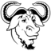

|  | Le code source de Kinovea est soumis à la licence GNU General Public License (GPL) dans sa version 2. Vous trouverez un exemplaire de cette licence dans le dossier d'installation de Kinovea, fichier GPLv2.txt |
| Les
icônes et graphismes, y compris le logo, sont soumis à la
licence LAL (Licence Art Libre). Vous trouverez un exemplaire de cette licence dans le dossier d'installation de Kinovea, fichier LAL-french.htm. |